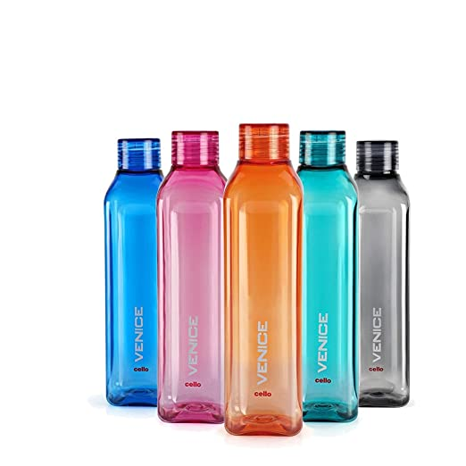

Case study
Test images:

Out put of
Mobile net:
Hair spray
Out put of
Wolfram project:Vial
Result:
Both wrong
MiniConclusion:
Both of them detected the image wrong as the image was of bottles
Out put of
Mobile net Pizza pie
Out put of
Wolfram project:Pizza
Result:Both correct
MiniConclusion: Both of them detected this image correct as it was pizza
Out put of
Mobile net:Cartoon
Out put of
Wolfram project:Book
Result:Wolfram correct
MiniConclusion:
Wolfram detected it correct as the image was of books.
Main conclusion
Wolfram is a better image detection model than mobilenet as it detected 2 out of 3 images corrects where as mobilenet could detect only 1 out of 3 correct and also the 1 time Wolfram did get inccorrect it was still close